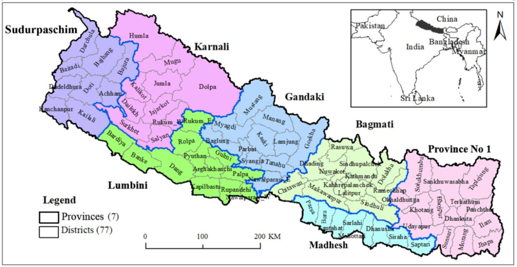

Geography of Nepal
Nepal is renowned for its stunning geographical diversity packed into a relatively small area of 147,516 square kilometers. It features three distinct regions: the high Himalayas with several of the world's tallest mountains including Mount Everest, the middle hills with temperate climates and vibrant cultural expressions, and the fertile, subtropical Terai region in the south. This topographical variation supports a rich array of ecosystems and a wide variety of flora and fauna, making Nepal a unique natural habitat and a hub for adventure and nature enthusiasts.
History of Nepal
Nepal's history is a tapestry of rich cultural influences, from ancient civilizations to modern-day shifts. Its strategic location between India and China has made it a historical crossroads for trade and cultural exchange. Over the centuries, Nepal's kingdoms rose and fell, each leaving its mark on the nation's identity. In the modern era, Nepal's integration into the global market has been shaped by its challenges and opportunities, with efforts to balance economic growth with preserving its unique heritage and environment.
Culture of Nepal
Nepal's culture is richly diverse, shaped by Hindu and Buddhist traditions, evident in its vibrant festivals, unique cuisine, and intricate temple architecture. This cultural mosaic is further colored by the distinct customs of its various ethnic groups, each contributing to the country's profound heritage and warm hospitality.
City:KathmanduCity:Kathmandu>
Kathmandu, is the capital city of Nepal.Kathmandu, Nepal's capital, is a bustling metropolis nestled in the Himalayas, renowned for its ancient temples, vibrant markets, and bustling streets. .